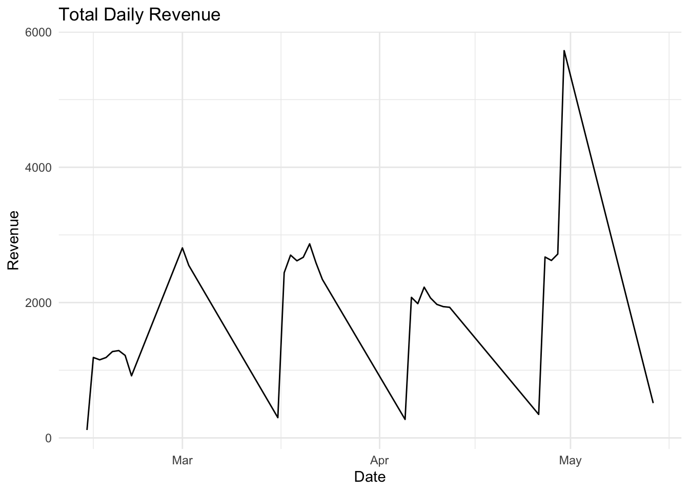
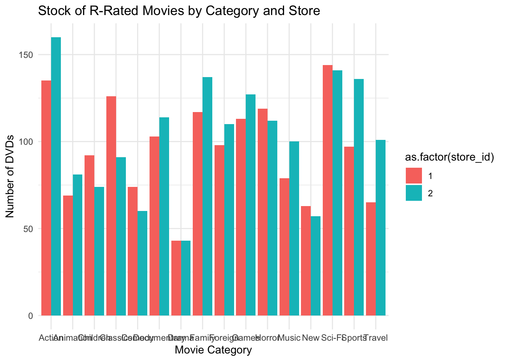

Attaching package: 'dplyr'The following objects are masked from 'package:stats':
filter, lagThe following objects are masked from 'package:base':
intersect, setdiff, setequal, union
Attaching package: 'dplyr'The following objects are masked from 'package:stats':
filter, lagThe following objects are masked from 'package:base':
intersect, setdiff, setequal, union• Edit '/Users/macbookpro/.Renviron'
• Restart R for changes to take effect[1] "Connection to the database is successful!" [1] "actor" "address"
[3] "category" "city"
[5] "country" "customer"
[7] "film" "film_actor"
[9] "film_category" "inventory"
[11] "language" "payment"
[13] "rental" "staff"
[15] "store" "actor_info"
[17] "customer_list" "film_list"
[19] "nicer_but_slower_film_list" "sales_by_film_category"
[21] "sales_by_store" "staff_list" [1] "rental_id" "rental_date" "inventory_id" "customer_id" "return_date"
[6] "staff_id" "last_update" rental_id rental_date inventory_id customer_id return_date
1 2 2005-05-24 22:54:33 1525 459 2005-05-28 19:40:33
2 3 2005-05-24 23:03:39 1711 408 2005-06-01 22:12:39
3 4 2005-05-24 23:04:41 2452 333 2005-06-03 01:43:41
4 5 2005-05-24 23:05:21 2079 222 2005-06-02 04:33:21
5 6 2005-05-24 23:08:07 2792 549 2005-05-27 01:32:07
6 7 2005-05-24 23:11:53 3995 269 2005-05-29 20:34:53
7 8 2005-05-24 23:31:46 2346 239 2005-05-27 23:33:46
8 9 2005-05-25 00:00:40 2580 126 2005-05-28 00:22:40
9 10 2005-05-25 00:02:21 1824 399 2005-05-31 22:44:21
10 11 2005-05-25 00:09:02 4443 142 2005-06-02 20:56:02
staff_id last_update
1 1 2006-02-16 02:30:53
2 1 2006-02-16 02:30:53
3 2 2006-02-16 02:30:53
4 1 2006-02-16 02:30:53
5 1 2006-02-16 02:30:53
6 2 2006-02-16 02:30:53
7 2 2006-02-16 02:30:53
8 1 2006-02-16 02:30:53
9 2 2006-02-16 02:30:53
10 2 2006-02-16 02:30:53 count
1 16044

QUERY PLAN
1 Sort (cost=635.55..635.63 rows=32 width=80) (actual time=4.057..4.062 rows=32 loops=1)
2 Sort Key: inventorycounts.store_id, inventorycounts.category_name
3 Sort Method: quicksort Memory: 27kB
4 CTE inventorycounts
5 -> HashAggregate (cost=633.79..634.11 rows=32 width=80) (actual time=4.020..4.028 rows=32 loops=1)
6 Group Key: s.store_id, c.name
7 -> Hash Join (cost=208.45..610.33 rows=3128 width=76) (actual time=1.252..3.522 rows=3181 loops=1)
8 Hash Cond: (r.inventory_id = i.inventory_id)
9 -> Seq Scan on rental r (cost=0.00..310.44 rows=16044 width=4) (actual time=0.008..0.849 rows=16044 loops=1)
10 -> Hash (cost=197.29..197.29 rows=893 width=76) (actual time=1.240..1.243 rows=904 loops=1)
11 Buckets: 1024 Batches: 1 Memory Usage: 52kB
12 -> Hash Join (cost=93.06..197.29 rows=893 width=76) (actual time=0.408..1.118 rows=904 loops=1)
13 Hash Cond: (i.store_id = s.store_id)
14 -> Hash Join (cost=92.02..188.94 rows=893 width=74) (actual time=0.391..0.992 rows=904 loops=1)
15 Hash Cond: (i.film_id = f.film_id)
16 -> Seq Scan on inventory i (cost=0.00..70.81 rows=4581 width=8) (actual time=0.004..0.237 rows=4581 loops=1)
17 -> Hash (cost=89.58..89.58 rows=195 width=74) (actual time=0.379..0.381 rows=195 loops=1)
18 Buckets: 1024 Batches: 1 Memory Usage: 17kB
19 -> Hash Join (cost=70.30..89.58 rows=195 width=74) (actual time=0.209..0.353 rows=195 loops=1)
20 Hash Cond: (fc.category_id = c.category_id)
21 -> Hash Join (cost=68.94..87.57 rows=195 width=8) (actual time=0.195..0.317 rows=195 loops=1)
22 Hash Cond: (fc.film_id = f.film_id)
23 -> Seq Scan on film_category fc (cost=0.00..16.00 rows=1000 width=4) (actual time=0.003..0.055 rows=1000 loops=1)
24 -> Hash (cost=66.50..66.50 rows=195 width=4) (actual time=0.179..0.180 rows=195 loops=1)
25 Buckets: 1024 Batches: 1 Memory Usage: 15kB
26 -> Seq Scan on film f (cost=0.00..66.50 rows=195 width=4) (actual time=0.004..0.150 rows=195 loops=1)
27 Filter: (rating = 'R'::mpaa_rating)
28 Rows Removed by Filter: 805
29 -> Hash (cost=1.16..1.16 rows=16 width=72) (actual time=0.009..0.010 rows=16 loops=1)
30 Buckets: 1024 Batches: 1 Memory Usage: 9kB
31 -> Seq Scan on category c (cost=0.00..1.16 rows=16 width=72) (actual time=0.003..0.005 rows=16 loops=1)
32 -> Hash (cost=1.02..1.02 rows=2 width=4) (actual time=0.006..0.006 rows=2 loops=1)
33 Buckets: 1024 Batches: 1 Memory Usage: 9kB
34 -> Seq Scan on store s (cost=0.00..1.02 rows=2 width=4) (actual time=0.003..0.004 rows=2 loops=1)
35 -> CTE Scan on inventorycounts (cost=0.00..0.64 rows=32 width=80) (actual time=4.022..4.032 rows=32 loops=1)
36 Planning time: 1.007 ms
37 Execution time: 4.120 msWhich step would you start with for optimisation ?
Seq Scan on rental r. The cost is 310.44, which is relatively high for a sequential scan, especially for a table with 16,044 rows. The actual time spent on this operation is 1.249ms. The Seq Scan on rental means that the query is scanning all rows in the rental table, the dataset is large that inefficient.
What does that step do ?
Seq Scan means the database reads all rows in the rental table. This is inefficient for large tables unless all rows are needed. The absence of an index on a key column (e.g., inventory_id) triggers a full scan, which slows down the query.